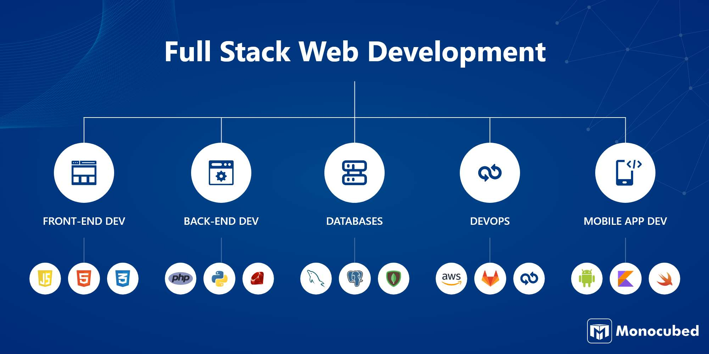

Full-Stack Development Learning Path 🚀
Step 1: Understand the Basics of Web Development
Before diving into full-stack, you need solid foundations in web technologies.
- ✅ HTML (Structure)
- ✅ CSS (Styling)
- ✅ JavaScript (Interactivity)
📌 Resources:
Step 2: Learn Frontend Development
Frontend deals with what users see and interact with.
- ✅ CSS Frameworks: Bootstrap, TailwindCSS
- ✅ JavaScript Frameworks: React.js, Vue.js, Angular
- ✅ State Management: Redux (for React)
- ✅ Frontend Routing: React Router
📌 Resources:
Step 3: Learn Backend Development
Backend handles the logic, database, and APIs.
- ✅ Programming Languages: JavaScript (Node.js), Python (Django/Flask), Ruby (Rails)
- ✅ Backend Frameworks: Express.js (Node.js), FastAPI (Python)
- ✅ Databases: PostgreSQL, MySQL, MongoDB
- ✅ Authentication: JWT, OAuth, Firebase Auth
- ✅ RESTful APIs & GraphQL
📌 Resources:
Step 4: Learn Databases & ORM
Databases store your app’s data.
- ✅ SQL Databases: PostgreSQL, MySQL
- ✅ NoSQL Databases: MongoDB, Firebase
- ✅ ORMs: Sequelize (Node.js), Prisma, Mongoose
📌 Resources:
Step 5: Learn DevOps & Deployment
A real-world app must be deployed online.
- ✅ Version Control: Git & GitHub
- ✅ Hosting Services: Vercel, Netlify, Render, Railway, AWS, DigitalOcean
- ✅ Containerization: Docker
- ✅ CI/CD: GitHub Actions, Jenkins
📌 Resources:
Step 6: Build Full-Stack Projects
Put everything together! Some beginner-friendly project ideas:
- ✅ Task Manager App (React + Node.js + MongoDB)
- ✅ E-commerce Platform (Next.js + PostgreSQL + Stripe)
- ✅ Chat App (React + Firebase Realtime Database)
- ✅ Blog CMS (Vue + Django + PostgreSQL)
📌 Resources:
Step 7: Advanced Topics
- ✅ WebSockets & Real-time Apps (Socket.io, WebRTC)
- ✅ Microservices & Serverless Architectures
- ✅ Testing (Jest, Cypress, Postman for API testing)
- ✅ Security Best Practices
Final Step: Apply for Jobs or Freelance
- ✅ Build a strong GitHub portfolio
- ✅ Create a LinkedIn & personal website
- ✅ Apply for junior full-stack developer roles or freelance gigs
This roadmap gives you a clear path from beginner to professional full-stack developer. Do you have a specific stack in mind (MERN, MEVN, Django, etc.)? I can help refine the path for your goals! 🚀